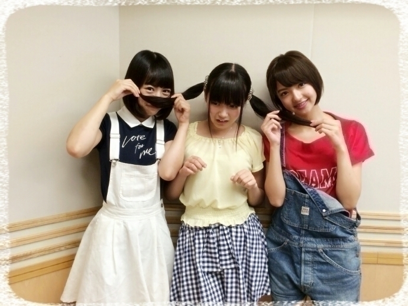
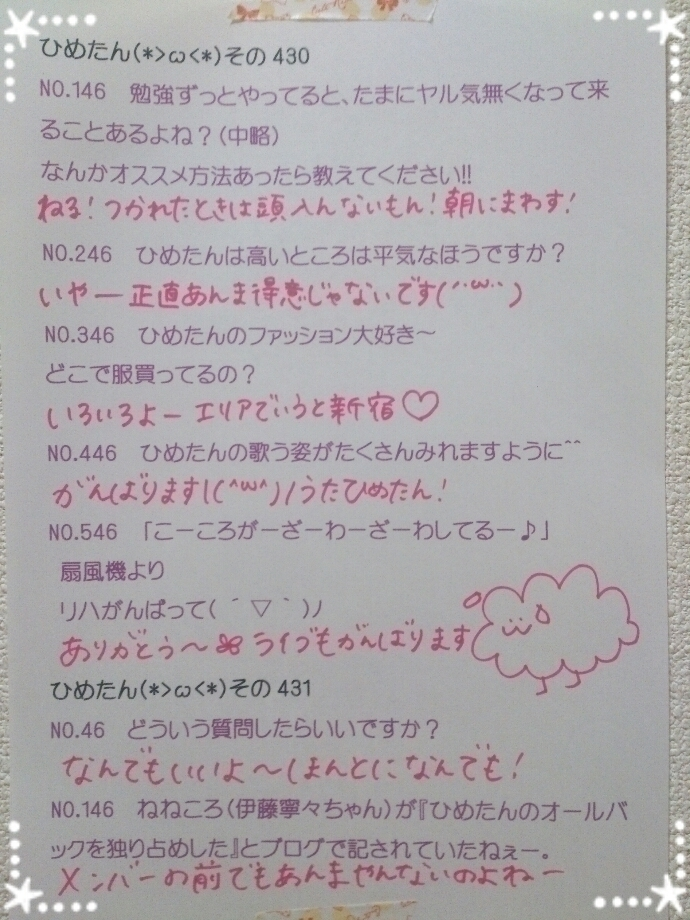

| 2014/08 17 Sun | ひめたん-OoO-その470 |
全国ツアー初日 大阪2公演終了(＊´ω`＊)
会場に来てくださったみなさん
ありがとうございました！
大阪のみなさんノリノリでほんと好き♡♡
ほんまにたのしかってんな～
好きやでおおさか～＊
大阪でライブするのは
去年の全国ツアー以来だから...1年ぶり！
ただいまでした∩´ω`∩ぱー
去年に引き続き、今年も
全国ツアーで大阪来ることができて
ほんとによかったです＊
来年も帰ってこれるように
さらにさらに精進していきたいな！
そのときはまた是非遊びに来てくださいねー
ライブTシャツ 大阪ver.

今回のライブTシャツは
5会場すべて違うデザインなんです
大阪はオレンジ・きいろの2色で
太陽がめらめらしてるやつ
ぎらぎら？めらめら
大阪ということで
ケータリングスペースにこんなものが

551の豚まん
たこ焼きと焼きそばの小さな屋台も出てて
大阪気分満喫できましたー
大阪観光とかする時間なかったけど
大阪の街をしっかり楽しんだよ
美味しいよ大阪！ごちそうさま大阪！
たこ焼きはたこ抜いたよ～
大阪夜公演では
ちょっとしたMCコーナーも
担ってみましたもので
れなさんびーむ(<・ω・>)を
やっていただいちゃったんですよ～
とってもきゅんきゅんしました♡♡
私は開演前の影ナレでななみんが
「ななみんびーむ(<・ω・>)」したのも
知ってるんだからね♡♡
次は21日福岡公演！
福岡でライブするのは1年ぶりかな
5会場の中では一番地元に近いこともあって
親近感沸くぞ福岡～
福岡のみなさーん会いにいくからね＼(^o^)／
さて、前回の乃木ののは
北野日奈子ちゃん
和田まあやちゃん でした☆

⌒ﾟ( ºωº )ﾟ⌒
ほら！みて！ふたりお揃いのお洋服！
姉妹みたいだよね！双子みたいだよね！
サロペットとかショートヘアとか
ひめたんにイタズラするところとかさ！←
わっきゃわっきゃしてたなーずーっと。
きけるものになってたかしら
そして ふつおた読まれないかなーって
いつも投稿してくださっているみなさん
枠をいっこ取ってしまってごめんなさい(´・ω・｀)
ほんとに届いてるからね！
そんで読まれるからね！
みんなじゃんじゃん投稿してね！笑
次回もお楽しみに☆
のぎ天#6公開されたよ＼(^o^)／
これについては次回お話しますね！
そしてこのあとの乃木どこ出てるので
よかったら観てくださーい
感想も聞かせてねー

 なんか急にメールの数増えた気がするけど
なんか急にメールの数増えた気がするけど
何か理由あるの？
楽しくなってきちゃった♡
迷惑かなー？やめた方がよかったら教えて？
今年の11月17日のひるごはんは
なんだと思いますかー？
うーわこれ絶対当たんないと思うわー
サブウェイとか行ってないかな
いやー自信ないわー
もしひめたんの封印されたおでこ見てしまったら
どうなってしまうのですか？
故意によるものなら撃ちますね～
姫、唯一あるライブDVDに
扇風機は収録されてませんが...。
......はっ(白目)
ひめは乃木坂入ってからディズニー行った？☆
一回だけ、まま(ハタチ)に連れられて
アフター5に行ったよー
ここ数年テーマパークに惹かれないんだよねー
寝る前に毎日メガシャキ飲んでるんですが、
全然寝れないんです、どうすればいいですか
なにそれおもしろーい(・∀・)
そうねーどうしたらいーんかねー
とりあメガシャキの量が足りないんじゃなーい？
川後Pに
「数々の男を魅了する！」
と宣言したひめたんこんにちは。
ちゃらひめたんですどーも
「食べた物を記録する！」だからね正しくはね
ひめたんが質問されたら困るって質問を
考え中であります←
いじめないでー(´-ω-｀)
ひめたん別にMじゃないんですよー
ひめたんの日記の
コメント欄下２ケタに46を踏んだ方へ
手書きでコメ返するコーナー
＼ ひめたん46 ／


いつもたくさんのコメント
ありがとうございます
今回も多くてびっくり！
じっくり読んだよー＼(^o^)／
ライブの感想 のぎ天 めーるの返信！
握手会がしばらくなくて寂しいけど
コメントでみなさんといつも会話してるみたい♪
なんかねー最近思うんだよねー
4・5年前の自分は今よりも
ずっとぎらぎらしてたなーって(´-ω-｀)
あの頃の自分に戻らねば。
さて、
絶賛全国ツアー真っ最中でありながら
10thシングル制作期間であります
撮影が続くぞよー
がんばらねばー＼(^o^)／＼(^o^)／
応援しててね♡
学生のみんなは夏休みもあとちょっとだよー
社会人のみんなはお盆は休めたのかしら？
(＊´・ω・＊)
コメント(956)
2014/08/17 23:54